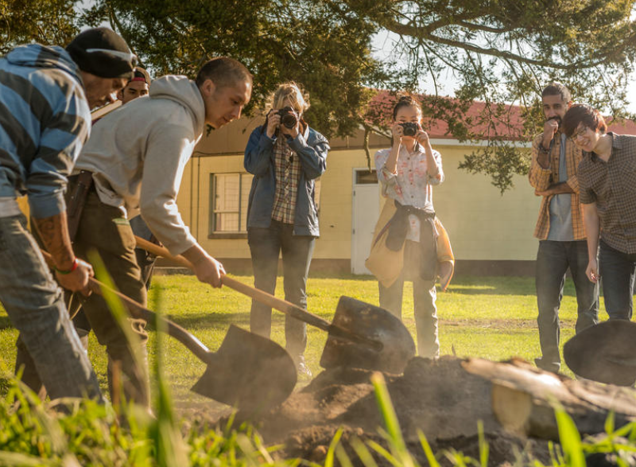

ABOUT US
Haukai Restaurant is located on a beautiful island with beautiful coastal scenery, where you can enjoy authentic Maori cuisine while enjoying the coastal scenery. And appreciate the local culture and customs. Smith and I have been running this restaurant for 7 years. We focus on the combination of food and culture, and better show New Zealand culture to everyone who loves New Zealand.
The BEST of New Zealand's Rugged South|Gordon Ramsay: Uncharted

In traditional Māori culture, we have fish, chicken, and root vegetables as staple foods, usually baked in the ground, but now they are more abundant, adding a variety of vegetables and meat.